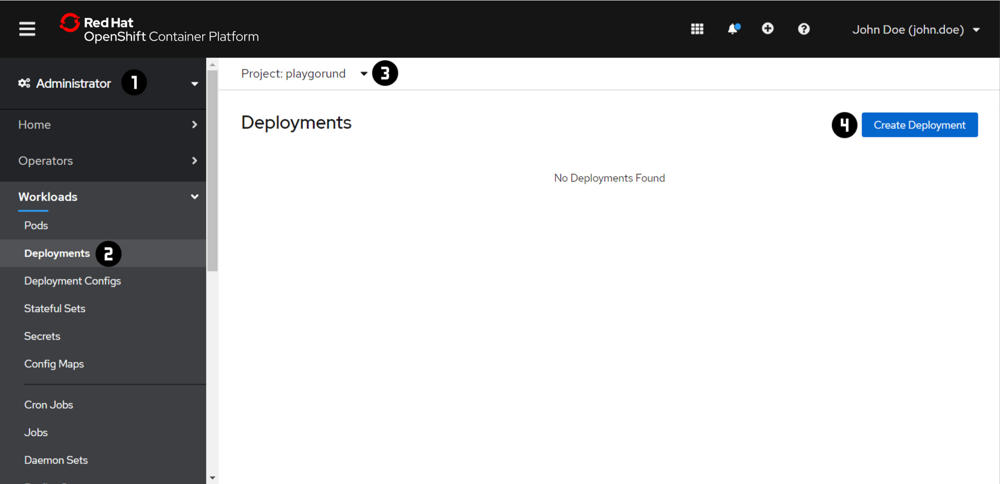
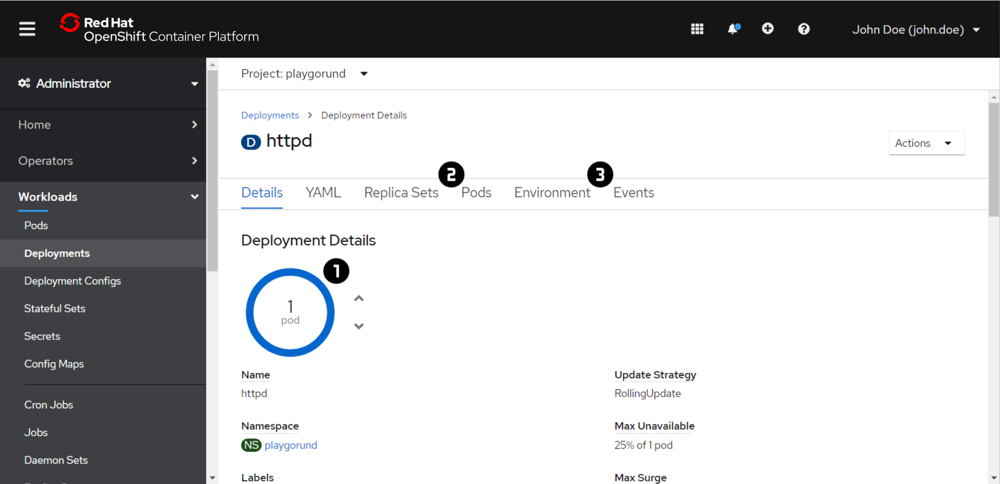
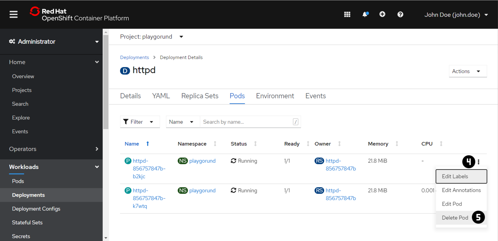
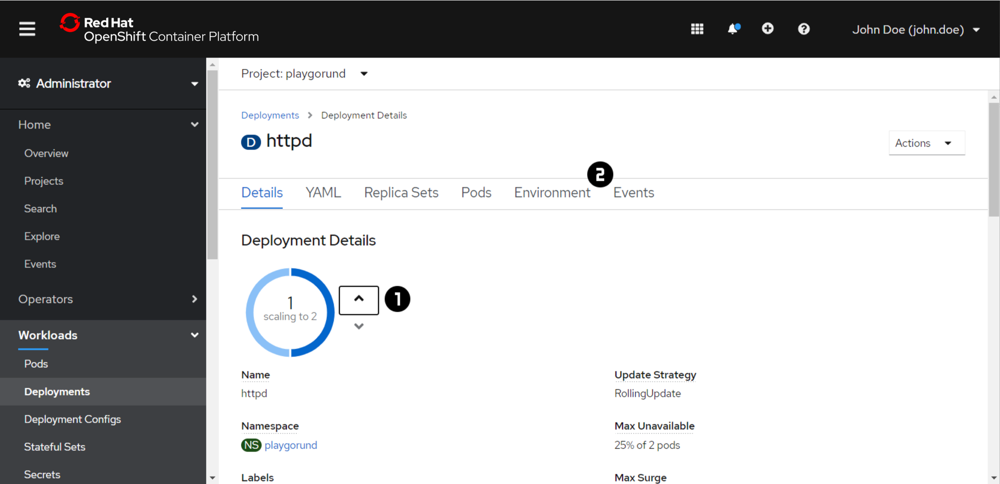

Exercise 2 - Deployments¶
You describe the desired state of your application in a Deployment by specifying the number of replicas and a Pod template.
The Deployment involve a ReplicaSet to manage the Pods in the background.
The ReplicaSet ensures that specified number of Pod replicas are running all the time.
If a Pod crashes or is deleted the ReplicaSet creates new instances up to the defined number.
Likewise, if there are more Pods running than desired, it deletes as many as necessary.
Check out the OpenShift or Kubernetes Documentation for more information about Deployemnts and ReplicaSets.
Note
For each exercise you can choose and only have to do either the 'Web Console' or the 'Command Line Interface (CLI)' section in oder to complete the exercise.
Create a Deployment


- Switch to the 'Administartor' view using the dropdown menu at .
- Navigate to 'Workloads' → 'Deployments' .
- Switch to the your project using the dropdown menu at . In each of the exercise make sure that you are in your project context before you are making any changes.
- Press 'Create Deployment' .
- Copy the following
Deploymentdefinition file to the editor :More detailed information about theapiVersion: apps/v1 kind: Deployment metadata: name: httpd labels: app: httpd spec: replicas: 1 selector: matchLabels: app: httpd template: metadata: labels: app: httpd spec: containers: - name: httpd-24 image: rhscl/httpd-24-rhel7:latestDeploymentdefinition file can be found in the Tab at . - Press 'Create' .
Inspect a Deployment

Note
If you have created the Deployment using the CLI:
- Repeat the steps 1 - 3 of the 'Create a Deployment' task above
- Open the 'Deployment Details' by clicking on the
Deploymentname in the 'Deployments' overview table.
- Check the 'Details' and status of the
Podsof aDeploymentby moving the mouse over the blue circle . The status should be 'Running' after a couple of seconds. - Additonally check the 'Pods' and the 'Events'
What is the difference between the Pod that was created manually and the one that was created by the Deployment?
Solution:
The Pod created from the Deployment have a random name.
Example:
httpd-12cf4d11ce-p9w5h
Deployment adds a random string (e.g. 12cf4d11ce) to the deployment name while creating the ReplicaSet.
The ReplicaSet itself adds another random string to the each Pod (e.g. p9w5h).

What happens if you delete a pod by opening in the 'Pods' tab and clicking ?
Solution:
The ReplicaSet of the Deployment automatically creates a new Pod. The same would happen if the application in the container of the Pod crashed or terminated. Check the 'Events' again to see what happend.
Scale a Deployment

- Scale the
Deploymentto have anotherPodof the application to achieve a redundant and stable setup by clicking on the up arrow at . - Wait until both
Podsare running and inspect agin the 'Events' .
Important
At the beginning of the exercise make sure that you are in your project context.
oc project <project name>
Create a Deployment
- Create a
Deploymentof the Apache HTTP Server using theoc createcommand:The output of the command should look this:oc create deployment httpd --image rhscl/httpd-24-rhel7:latest[~] $ oc create deployment httpd --image rhscl/httpd-24-rhel7:latest deployment.apps/httpd created
Inspect a Deployment
-
Let's verify the state of the
Deploymentthat you have created usingoc getandoc describe.oc get deployments -o wideoc describe deployment <deployment name> -
Inspect the pods the
Deploymenthas created.oc get podsoc get pods -o wideWhat is the difference between the
Podthat was created manually and the one that was created by theDeployment?Solution:
The
Podcreated from theDeploymenthave a random name.Example:
Thehttpd-12cf4d11ce-p9w5hDeploymentadds a random string (e.g.12cf4d11ce) to the deployment name while creating theReplicaSet. TheReplicaSetitself adds another random string to the eachPod(e.g.p9w5h).What happens if you delete a pod using
oc delete pod <pod name>?Solution:
The
ReplicaSetof theDeploymentautomatically creates a newPod. The same would happen if the application in the container of thePodcrashed or terminated. -
Also check the 'Inspect a Deployment' section for the Web Console.
Scale a Deployment
- Scale the
Deploymentto have anotherPodof the application to achieve a redundant and stable setup.oc scale deployment <deployment name> --replicas=2 - Inspect the
Deploymentand pods again.